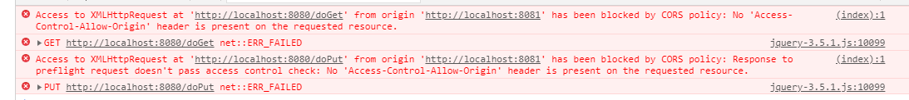
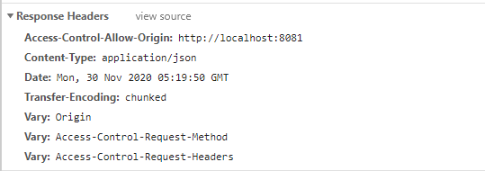

CROS
CROS 解决跨域问题
1、同源策略
同源策略是由 Netscape 提出的一个著名的安全策略，它是浏览器最核心也最基本的安全功能，现在所有支持 JavaScript 的浏览器都会使用这个策略。所谓同源是指协议、域名以及端口要相同。同源策略是基于安全方面的考虑提出来的，这个策略本身没问题，但是我们在实际开发中，由于各种原因又经常有跨域的需求，传统的跨域方案是 JSONP，JSONP 虽然能解决跨域但是有一个很大的局限性，那就是只支持 GET 请求，不支持其他类型的请求，而今天我们说的 CORS（跨域源资源共享）（CORS，Cross-origin resource sharing）是一个 W3C 标准，它是一份浏览器技术的规范，提供了 Web 服务从不同网域传来沙盒脚本的方法，以避开浏览器的同源策略，这是 JSONP 模式的现代版。
在 Spring 框架中，对于 CORS 也提供了相应的解决方案，今天我们就来看看 SpringBoot 中如何实现 CORS 。
2、实践
首先创建两个普通的 Spring Boot 项目，第一个命名为 provider 提供服务，第二个命名为 consumer 消费服务，第一个配置端口为 8080 ，第二个配置配置为 8081 ，然后在 provider 上提供两个 hello 接口，一个 get ，一个 post ，如下：
1 |
|
在 consumer 的 resources/static 目录下创建一个 html 文件，发送一个简单的 ajax 请求，如下：
1 |
|
然后分别启动两个项目，发送请求按钮，观察浏览器控制台如下：

可以看到，由于同源策略的限制，请求无法发送成功。
使用 CORS 可以在前端代码不做任何修改的情况下，实现跨域，那么接下来看看在 provider 中如何配置。首先可以通过 @CrossOrigin 注解配置某一个方法接受某一个域的请求，如下：
1 |
|
这个注解表示这两个接口接受来自 http://localhost:8081 地址的请求，配置完成后，重启 provider ，再次发送请求，浏览器控制台就不会报错了，consumer 也能拿到数据了。
此时观察浏览器请求网络控制台，可以看到响应头中多了如下信息：

这个表示服务端愿意接收来自 http://localhost:8081 的请求，拿到这个信息后，浏览器就不会再去限制本次请求的跨域了。
provider 上，每一个方法上都去加注解未免太麻烦了，在 Spring Boot 中，还可以通过全局配置一次性解决这个问题，全局配置只需要在配置类中重写 addCorsMappings 方法即可，如下：
1 |
|
/** 表示本应用的所有方法都会去处理跨域请求， allowedMethods 表示允许通过的请求数，allowedHeaders 则表示允许的请求头。经过这样的配置之后，就不必在每个方法上单独配置跨域了。
3、存在的问题
了解了整个 CORS 的工作过程之后，我们通过 Ajax 发送跨域请求，虽然用户体验提高了，但是也有潜在的威胁存在，常见的就是 CSRF（Cross-site request forgery）跨站请求伪造。跨站请求伪造也被称为 one-click attack 或者 session riding，通常缩写为 CSRF 或者 XSRF ，是一种挟制用户在当前已登录的 Web 应用程序上执行非本意的操作的攻击方法，举个例子：
假如一家银行用以运行转账操作的 URL 地址如下：
http://icbc.com/aa?bb=cc，那么，一个恶意攻击者可以在另一个网站上放置如下代码： <img src=”http://icbc.com/aa?bb=cc"> ，如果用户访问了恶意站点，而她之前刚访问过银行不久，登录信息尚未过期，那么她就会遭受损失。
基于此，浏览器在实际操作中，会对请求进行分类，分为简单请求，预先请求，带凭证的请求等，预先请求会首先发送一个 options 探测请求，和浏览器进行协商是否接受请求。默认情况下跨域请求是不需要凭证的，但是服务端可以配置要求客户端提供凭证，这样就可以有效避免 csrf 攻击。
 微信
微信 支付宝
支付宝